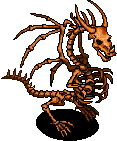
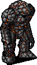
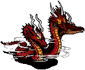
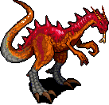

Medusa Creant

The Medusa Creant quest involves creating the Medusa Talisman in order to summon and defeat Medusa. Completing the Medusa Creant quest is part of Grand Mastering and is required to transcend your class.
Quest
In order to create the Medusa Talisman, you will need to collect:
- Left Talisman Half
- Right Talisman Half
- Polished Pearl
- Pouch of Gems
These Oren Ruins maps (external site) may be helpful when navigating the ruins.
Polished Pearl
In order to obtain the Polished Pearl, you will first need to travel to the Nobis Pub in Nobis Village and speak with Duncan to purchase a Dusty Pearl for 1,000,000 Gold.
You can reach Nobis Village by first travelling to Oren. After arriving at Oren, you can click on the Oren Codex by the docks to travel instantly to the Oren City tower. From the tower, travel north until you reach the entrance to Oren Jungle (50, 1). Continue north through Oren Jungle until you reach the Nobis gates (29, 19). Say, "Welcome Aisling" out loud to enter the gates. You will arrive at the Nobis Passage. From the Nobis Passage, travel west until you reach Nobis Village (1 ,11).
Duncan can be found in the corner of the Nobis Pub (Nobis Village - 29, 49). Speak with him to purchase a Dusty Pearl for 1,000,000 Gold.
You transform your Dusty Pearl into a Polished Pearl by entering Lynith Sea 1. Note that the first underwater room of Lynith Sea is called "Lynith Sea", but you need to enter the second underwater room, called "Lynith Sea 1". Upon entering the room, you will receive a message saying your pearl has been transformed.
Talisman Halves
The Left and Right Talisman Halves can be found as drops from monsters in the Oren Ruins, which you will travel through in order to collect your Pouch of Gems. You will likely complete this part of the quest while defeating enemies while you travel and I recommend starting with the the Pouch of Gems before (explicitly) farming the Talisman Halves.
The Left Talisman Half drops from monsters on the second floor of Oren Ruins and the Right Talisman Half drops from enemies on the third floor of Oren Ruins.
Pouch of Gems
Collecting the Pouch of Gems is the most time-intensive part of the Medusa Creant quest. In summary, you will need to dig up bones in Oren Ruins and then summon a chain of mini-bosses throughout Oren Ruins.
The Oren Ruins can be accessed by travelling north through Oren Village (30, 1). You should walk through the gate, rather than around, as it is considered bad luck not to do so. While you are travelling throughout the Oren Ruins, you may wish to not cas Fas Nadur on yourself, as enemies cast Light elemental spells and have Dark melee attacks.
Be warned that Gorgons spawn in all the boss rooms, so it is not safe to go AFK while in those rooms.
Copper Bones
You will need to collect nine Copper Bones throughout the outside part of Oren Ruins. In order to dig up the bones, you will need to buy a shovel and assail with it equipped. If you cannot unequip your equipped weapon because of subpathing, it is possible to have another character dig up with bones for you. However, there is a cooldown between the time any character can dig up the same bones twice.
Oren Ruins 1-5
- Copper Bone 1: (10, 19)
Oren Ruins 1-6
- Copper Bone 2: (43, 47)
- Copper Bone 3: (12, 31)
Oren Ruins 1-7
- Copper Bone 4 and 5: (65, 32)
Oren Ruins 1-8
- Copper Bone 6: (12, 32)
- Copper Bone 7: (57, 22)
- Copper Bone 9: (65, 83)
- Copper Bone 8: (10, 82)
When you are finished digging up the bones, you should have a total of nine Copper Bone pieces.
Ruby Gemstone

The Ruby Gemstone is obtained by using your Copper Bones to summon the Copper Draco in the Oren Ruins Altar 1 room (accessed from Oren Ruins 2-16). The Copper Draco is Dark defense and Dark attack. You may need to recast debuffs if the Draco clears them. Suain makes the fight much easier.
The Copper Draco drops the Ruby Gemstone and also has a chance of dropping the same kind of bones that are dug up outside in the Oren Ruins. It may be possible to summon additional Dracos if you get enough of such bones.
Sapphire Gemstone

The Sapphire Gemstone is obtained by defeating the Ancient Lava Golem in the Oren Ruins Altar 2 room (accessed from Oren Ruins 2-10). Summoning the Golem will consume your Ruby Gemstone, but reward you with a Sapphire Gemstone. The Lava Golem has Fire Defense, so be sure to use Sea element when fighting it. You may need to recast debuffs in the fight. Suain makes the fight much easier.
Amber Gemstone

The Amber Gemstone is obtained by defeating the Ancient Fire Hydraco in the Oren Ruins Altar 3 room (accessed from Oren Ruins 3-10). Summoning the Hydraco will consume your Sapphire Gemstone, but reward you with an Amber Gemstone.
- The first phase has Fire defense.
- The second phase has Light defense.
- The third phase has Dark defense.
You may need to cast debuffs if the fight goes slowly. Suain makes the fight much easier.
Obtaining the Pouch

The Pouch of Gems is obtained by defeating the Ancient Fire Drake in the Oren Ruins Altar 4 room (accessed from Oren Ruins 3-16). Summoning the Drake will consume your Amber Gemstone, but reward you with a Pouch of Gems. The Drake has Dark defense. You may need to recast debuffs in the fight. Suain makes the fight much easier.
Medusa Talisman
Ensure you have all the requirements in order to create the Medusa Talisman:
- Left Talisman Half
- Right Talisman Half
- Polished Pearl
- Pouch of Gems
Return to Duncan in the Nobis Pub (Nobis Village - 29, 49). Tell him that you found talisman pieces and he will forge them into an Empty Talisman. If you speak to him again, he will forge the Medusa Talisman by combining the Empty Talisman with your Polished Pearl and Pouch of Gems.
Medusa Creant Fight
The Medusa is summoned in the Oren Ruins Altar 5 room (accessed from Oren Ruins 3-2).
Medusa has a random defensive element, so be sure to read the element to know which offensive element to use. You will need to recast debuffs in the fight, as Medusa will remove them regularly from herself. Keeping Suain cast on Medusa will make the fight much easier. She will summon a small amount of monsters (1-3) a few times in the fight when her health drops below certain thresholds.
Rewards
The rewards for each class are as follows:
| Class | Reward |
|---|---|
| Monk | Dugon |
| Priest | Beothaich Comhla spell |
| Rogue | Weapon |
| Warrior | Armour |
| Wizard | Greaves |